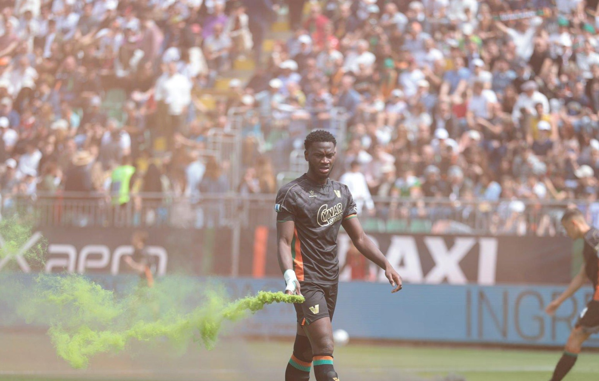

Match Report
Venezia vs AC Milan – Serie A
April 27, 2025
Fali Cande in action for Venezia during the Serie A match against AC Milan at Pierluigi Penzo Stadium, April 27, 2025.
The match saw Venezia FC put up a spirited performance against the Rossoneri. Fali Cande was a standout, making several key defensive interventions and supporting the attack down the left flank.
Despite a strong effort from the home side, AC Milan managed to edge out a narrow victory. The fans at Pierluigi Penzo Stadium showed unwavering support throughout the match, creating an electric atmosphere.
← Back to News